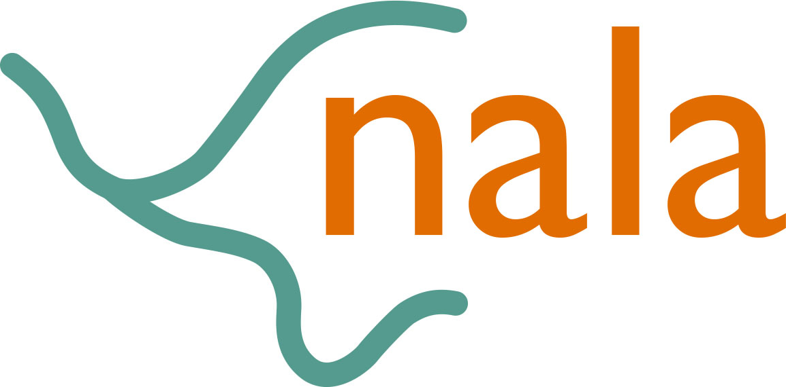
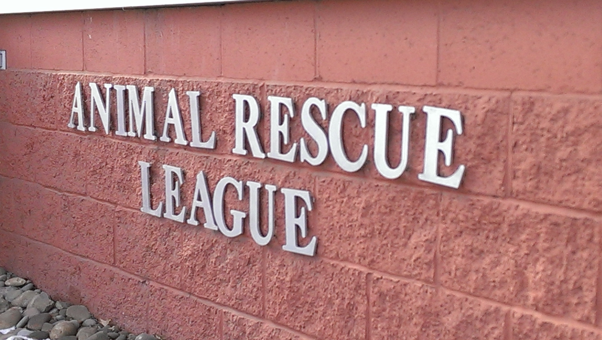
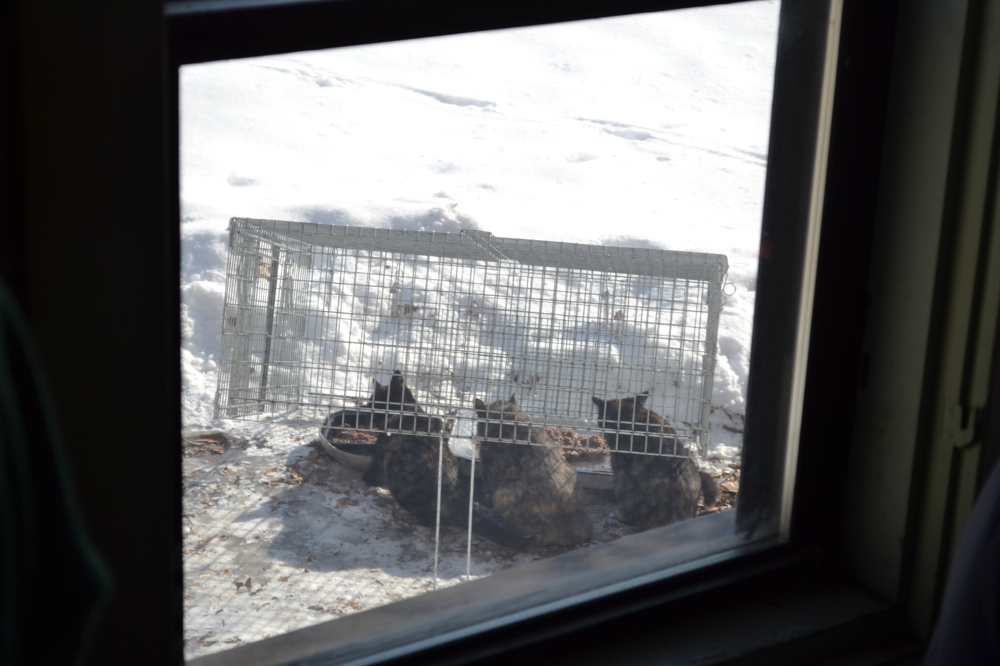
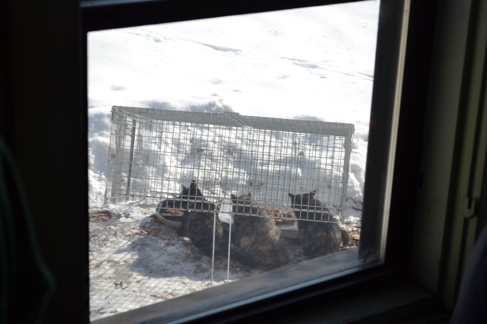
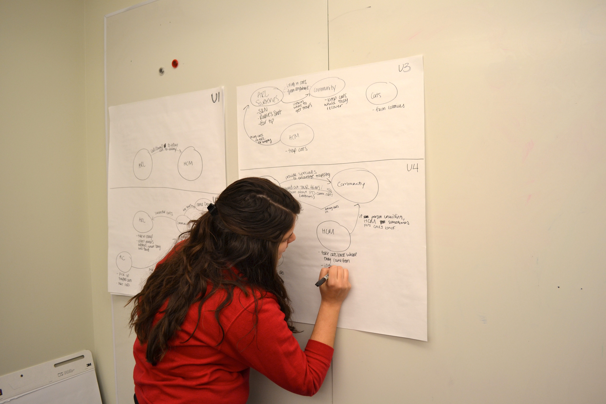
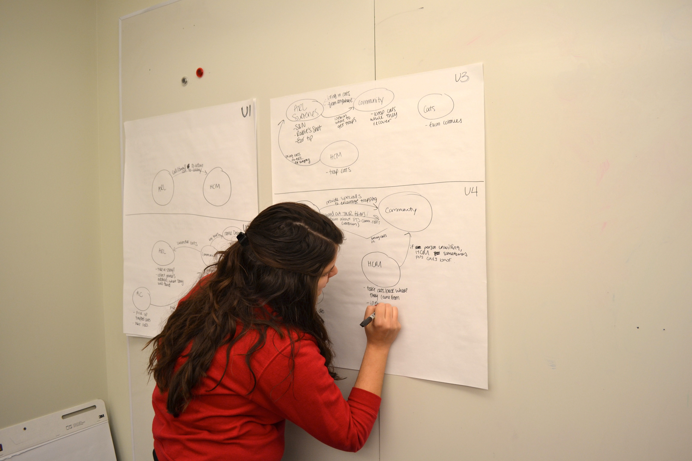

Last year, the Animal Rescue League took in over 13,000 animals. The Rescue League receives an overwhelming number of kitten litters every year partly because community cats are often not spayed or neutered. Our goal is to build a digital tool that helps control the community cat population through spay/neuter programs and education. My two teammates and I make up team nala and are doing this project for our small group study course.

Role Description
My role on the team is User Experience Designer. I have interviewed users and stakeholders, and conducted contextual inquiries. We synthesized our data and are working on our visions. Next we will prototype our design.In the end, we will have a book containing all of our work. I am responsible for our book design.
Process
We began the project by visiting and touring the Animal Rescue League to understand the different stakeholders. We also gained a deeper understanding of how serious the community cat problems is through our visit. We talked to over 15 domain experts. We even went cat trapping to experience what that process entails!
 

 

We owe a very big thank you to our friends at the Animal Rescue League, Jenna Date, the Human Computer Interaction Institute, Carnegie Mellon University, and all of the unbelievably passionate cat lovers we talked to for all of their help, support, and enthusiasm.